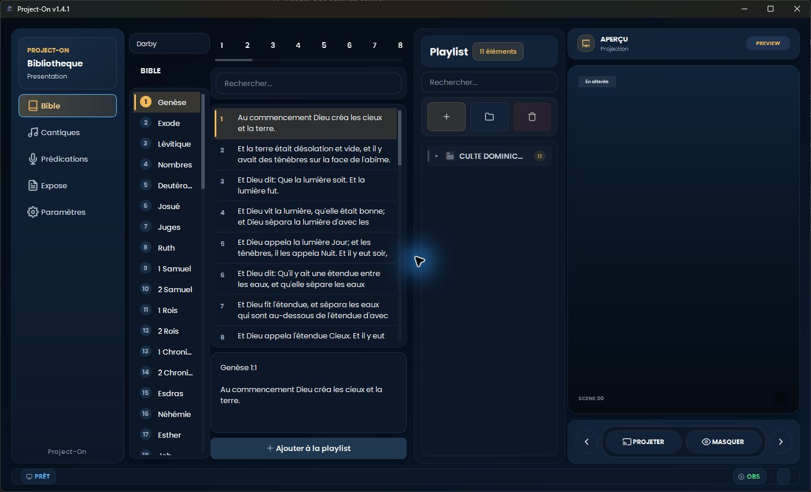
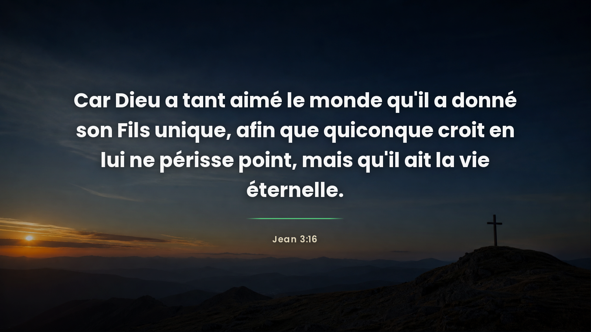
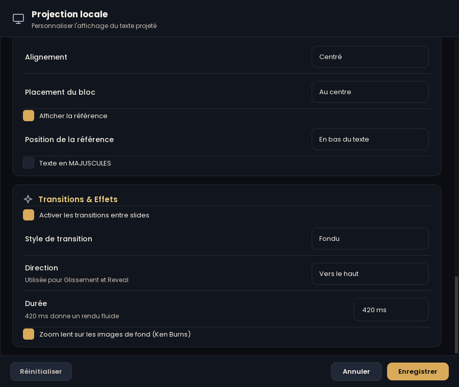
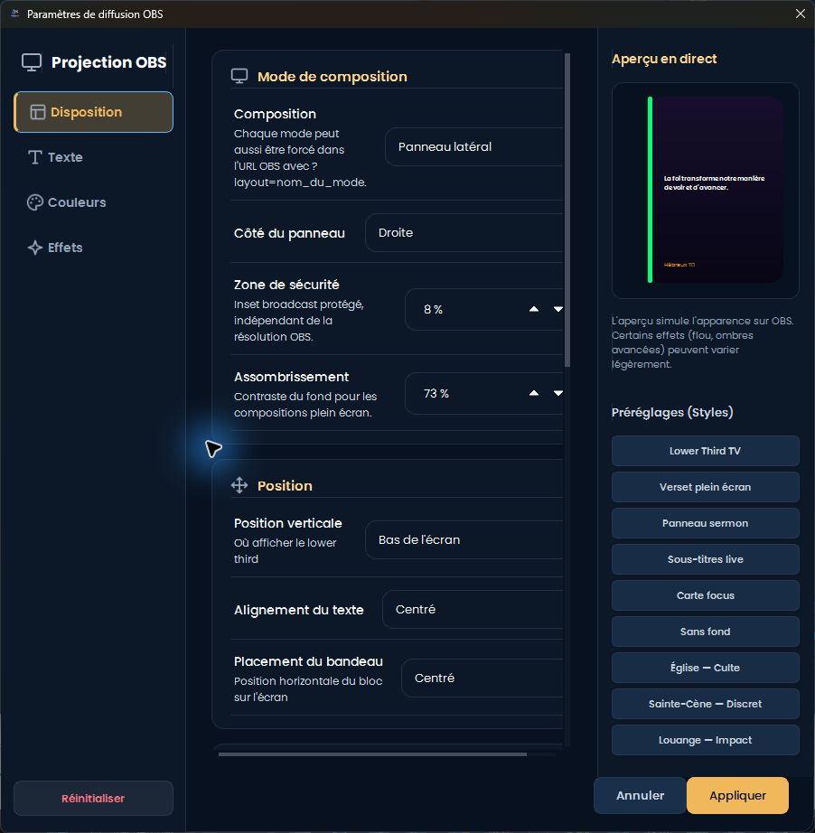
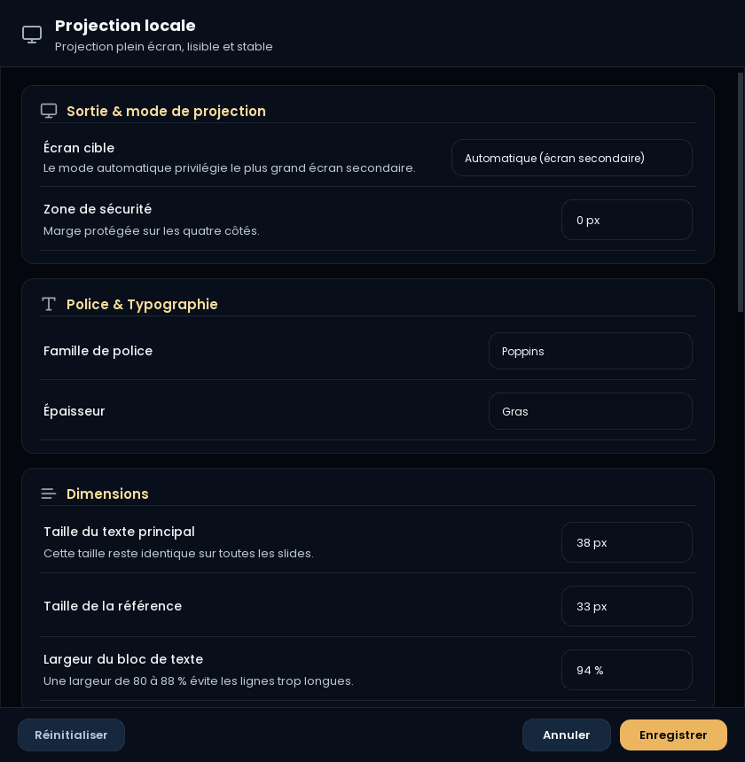

Bible
Naviguez livre par livre, recherchez un passage et projetez le verset en un clic, avec sa référence.
Project-On réunit la Bible, les cantiques, les prédications et les exposés dans un seul logiciel clair et rapide — avec une sortie OBS professionnelle et une projection plein écran cinématique.
Mise à jour du 30 juin 2026 : ajout de la version biblique Darby (J.N. Darby 1872, domaine public).

Pensé pour les opérateurs : on cherche, on ajoute à la playlist, on projette. Rien de superflu.
Naviguez livre par livre, recherchez un passage et projetez le verset en un clic, avec sa référence.
Bibliothèque de cantiques organisée par strophes, prête à défiler pendant la louange.
Importez et présentez vos sermons et exposés, structurés pour un suivi fluide à l'écran.
Un bandeau « broadcast » élégant pour vos diffusions YouTube/Facebook, entièrement personnalisable.
Transitions Fondu, Glissement, Zoom, Flou et Reveal, plus un zoom lent (Ken Burns) sur les images de fond.
Fonds sobres et lisibles — croix, aigle, lion, agneau — pensés pour garder le texte parfaitement net.
Une interface sombre et soignée, identique sur l'écran de contrôle et à la projection.
Texte centré, ombres maîtrisées, fond discret : le verset reste l'élément principal. Les couleurs d'accent s'adaptent à la source (Bible, cantique, prédication).

Choisissez le style de transition, la direction et la durée — et activez le zoom lent Ken Burns. La même richesse que la sortie OBS, désormais sur la projection locale.

Position, police, couleurs, dégradé, flou, ombres, contour, préréglages… avec un aperçu en direct. Branchez la source navigateur dans OBS et c'est prêt.


Installeur Windows guidé en français. Une fois installé, tout fonctionne hors-ligne.
Nouveau dans cette version : la traduction biblique Darby (J.N. Darby 1872, domaine public).
Windows peut afficher « SmartScreen » à la première ouverture (éditeur non vérifié) : cliquez sur « Informations complémentaires » puis « Exécuter quand même ».
Si l'installeur est bloqué par Windows (« Erreur 4551 : une stratégie de contrôle
d'application a bloqué ce fichier »), utilisez la version portable :
décompressez le .zip et lancez Project-On.exe — aucune installation,
donc rien ne s'exécute depuis le dossier temporaire.